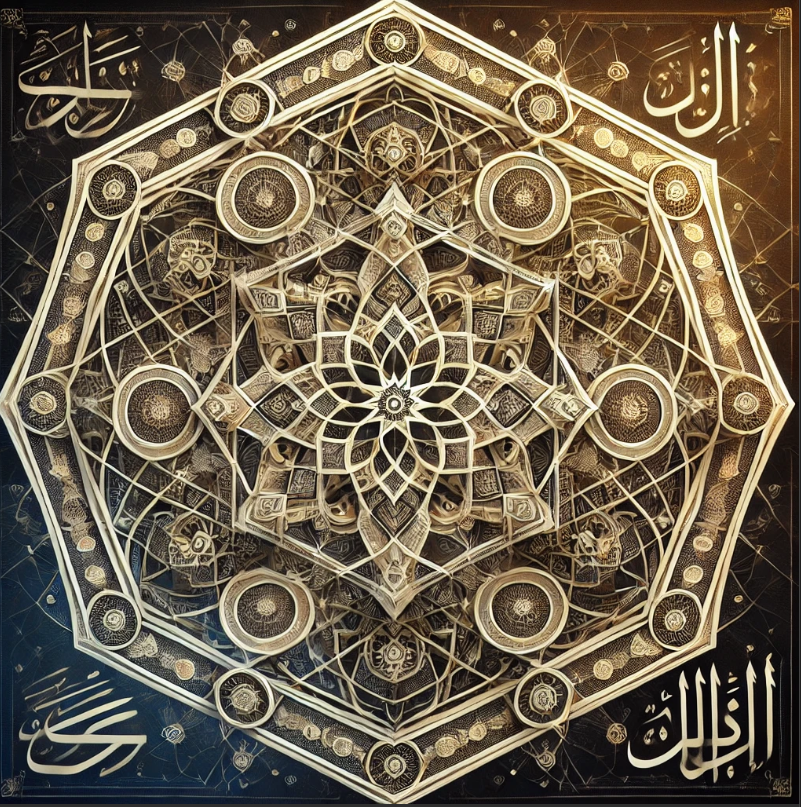

Al-Malak
Der Allmächtige
II · Glaubensgemeinschaft Archivblatt 10
Der Glaube Shirazads
Al-Malak gilt den Gläubigen Shirazads als einziger Schöpfer. Narath verkündet als Prophet eine ausschließliche Offenbarung, die das religiöse und weltliche Leben beherrscht.

Gestalten dieser Überlieferung
Die Namen, Bildnisse und Aspektzuordnungen dieser Glaubensrichtung. Verweise führen zu den entsprechenden Überlieferungen im Glaubenscodex.

Der Allmächtige
Zu dieser Suche wurde kein Eintrag gefunden. Versucht einen anderen Namen oder öffnet wieder alle Kapitel.
Die Offenbarung der Schwarzen Sonne ist eine unerschütterliche und bedrohliche Religion, die tief in den Herzen des Volkes von Shirazad verwurzelt ist. Sie basiert auf der Prophezeiung, die durch den göttlichen Propheten Narath, das lebendige Abbild von Al-Malak, dem einen und einzigen Schöpfer, enthüllt wurde. Diese Religion erhebt den Anspruch auf absolute Wahrheit und lehnt die Existenz aller anderen Gottheiten als bloße Dämonen oder unreine Wesen ab, die die Menschen in die Irre führen.
Al-Malak, der allmächtige Schöpfer der Welt, hat die Menschheit geformt und ihr Leben eingehaucht. Doch in den Augen des Volkes von Shirazad hat die restliche Welt sich von diesem wahren Gott abgewandt und verehrt stattdessen falsche Götter, heidnische Druiden und Götzen, die nichts weiter als Manifestationen des Bösen sind. Diese falschen Gottheiten, die von den Menschen in Pantheons verehrt werden, sind nach den Lehren dieser Religion nichts anderes als Missinterpretationen oder bösartige Spiegelungen von Al-Malak selbst.
In der Offenbarung der Schwarzen Sonne wird ein düsterer Moment vorhergesagt, an dem die Sonne von einer göttlichen Entität verdunkelt wird, als Strafe für die Menschheit, die den wahren Glauben verraten hat. Diese Entität, eine Verkörperung des Zorns Al-Malaks, soll die Menschheit ins Verderben stürzen, um die Welt von den Götzendienern und Heiden zu reinigen.
Doch Al-Malak hat das Volk von Shirazad auserwählt, um diese Strafe abzuwenden und den Zorn des Schöpfers zu besänftigen. Unter der Führung von Narath, ihrem Propheten und Herrscher, sind die Shirazad dazu berufen, die Welt von den unreinen Einflüssen zu säubern, alle Götzen zu zerstören, die heidnischen Druiden und Schamanen zu töten und die Völker unter ihrem Banner zu vereinen. Nur durch diese strikte Erfüllung ihrer göttlichen Mission kann die Offenbarung der Schwarzen Sonne abgewendet und Al-Malaks Gnade erlangt werden.
Die Religion der Offenbarung der Schwarzen Sonne ist ein Glaubenssystem, das von absolutem Gehorsam, unerschütterlichem Glauben und der unbarmherzigen Durchsetzung göttlicher Gerechtigkeit geprägt ist. Ihre Anhänger sehen es als ihre heilige Pflicht an, die Welt von falschen Göttern zu befreien und die Menschheit zurück zu den Lehren des einzigen wahren Gottes zu führen – bevor es zu spät ist.
Die Geschichte der Religion der Offenbarung der Schwarzen Sonne ist untrennbar mit der Besiedlung von Shirazad verbunden, einem Land, das zu einem heiligen Ort für das auserwählte Volk wurde. Ursprünglich stammt das Volk von Shirazad aus einer anderen, weit entfernten Heimat, die sie aufgrund von Kriegen, Naturkatastrophen oder einer göttlichen Vorsehung verlassen mussten. Auf der Suche nach einem neuen Zuhause zogen sie durch viele Länder, bis sie schließlich das fruchtbare, aber unberührte Land Shirazad entdeckten.
In dieser Zeit des Umbruchs offenbarte sich Narath, der Prophet und das lebendige Abbild von Al-Malak, dem Schöpfer der Welt. Narath, ein halbgöttliches Wesen, dessen Existenz von göttlicher Macht durchdrungen war, suchte zunächst andere Völker auf, um ihnen die Offenbarung der Schwarzen Sonne zu verkünden. Doch überall, wo er predigte, wurde er abgelehnt, verspottet oder sogar verfolgt. Die Menschen wollten seine Warnungen nicht hören, sie hielten an ihren alten Göttern und Traditionen fest und verweigerten sich der Wahrheit.
Erst als Narath das Volk von Shirazad erreichte, fand er Gehör. Die Shirazad, ein Volk, das in seiner alten Heimat viel Leid erfahren hatte, war offen für seine Botschaft. Sie erkannten die göttliche Wahrheit in seinen Worten und verstanden, dass ihr Schicksal von größerer Bedeutung war. Als sie Narath nicht verwarfen, sondern ihm ihre Treue schworen, heiligte er sie und erklärte, dass sie von Al-Malak, dem einzig wahren Gott, auserkoren worden seien, um über alle anderen Völker zu herrschen und sie zu richten.
Von diesem Moment an betrachteten sich die Shirazad als das auserwählte Volk, dessen heilige Pflicht es war, die Offenbarung der Schwarzen Sonne abzuwenden und die Menschheit vor dem Zorn Al-Malaks zu retten. Unter der Führung von Narath begannen sie, ihre Mission in die Tat umzusetzen: die falschen Götter und ihre Anhänger zu vernichten, die unreinen Kulte zu zerstören und die Welt unter die Herrschaft Al-Malaks zu bringen.
Die Geschichte dieser Religion ist daher eine Geschichte von Flucht, Offenbarung und göttlicher Auserwählung. Sie ist die Geschichte eines Volkes, das von Leiden und Entbehrungen gezeichnet wurde, bis es schließlich seine göttliche Bestimmung fand – eine Bestimmung, die in den Worten und Taten ihres Propheten Narath verankert ist und die sie zur Geißel der Ungläubigen und zum Vollstrecker des göttlichen Willens Al-Malaks machte.
Die Religion der Offenbarung der Schwarzen Sonne ist eine strenge und unnachgiebige Glaubenslehre, die das Volk von Shirazad als das verheißene und auserwählte Volk des einen wahren Gottes, Al-Malak, erhebt. Diese Überzeugung bildet das Fundament ihrer gesamten Doktrin und prägt jede Facette ihres gesellschaftlichen, religiösen und politischen Lebens. Hier ist eine Übersicht über die zentralen Lehren und Regeln, die diese Religion definieren:
Die Menschen von Shirazad sehen sich als die einzigen wahren Nachfolger und Jünger von Al-Malak. Sie glauben, dass sie von Gott auserwählt wurden, um die Welt von falschen Göttern und unreinen Kulten zu reinigen. Diese Auserwähltheit verleiht ihnen eine tiefe Arroganz und Stolz, wodurch sie sich über alle anderen Völker und Religionen erheben.
Andere Glaubensrichtungen werden von den Shirazad als Häresie angesehen. Die Anhänger anderer Religionen werden als verdammt betrachtet und sind in den Augen der Shirazad wertlos. Die Religion der Offenbarung der Schwarzen Sonne erlaubt es den Gläubigen, Menschen anderer Glaubensrichtungen zu töten, zu versklaven, zu schänden und zu Konkubinen zu machen, ohne dabei göttliche Strafen zu fürchten.
Menschen aus anderen Nationen und Glaubensrichtungen können von den Shirazad nur dann akzeptiert werden, wenn sie zu den Lehren Al-Malaks konvertieren. Doch selbst nach der Konvertierung bleibt ein tiefes Misstrauen bestehen, und die Konvertiten müssen sich in der Hierarchie der Shirazad erst beweisen, um wirklich anerkannt zu werden.
Wer als Gläubiger der Schwarzen Sonne geboren wird, muss diesen Glauben bis zu seinem Lebensende beibehalten. Ein Abfall vom Glauben (Apostasie) wird mit dem Tod bestraft, da ein Abtrünniger als Verräter und Verfluchter gilt, der sein Leben verwirkt hat.
Umgang mit Andersgläubigen
Die Religion erlaubt und fördert die Versklavung von Menschen anderer Religionen und Nationen. Insbesondere Kulturen, die Götzen anbeten, werden als minderwertig angesehen und nur als Sklaven geduldet. Diese Sklaverei wird als göttliche Ordnung betrachtet, die den Shirazad das Recht gibt, über die „Unreinen“ zu herrschen.
Das Anbeten von Götzen ist in Shirazad streng verboten und wird mit extremen Maßnahmen bestraft. Wer beim Götzendienst ertappt wird, muss entweder mit dem Tod oder der Versklavung rechnen. Diese harte Linie soll sicherstellen, dass die Reinheit des Glaubens an Al-Malak gewahrt bleibt.
An der Spitze der religiösen Hierarchie steht Narath, der Prophet und auserkorene Herrscher. Unter ihm gibt es eine Priesterschaft, die die Lehren Al-Malaks interpretiert und durchsetzt. Die Priester haben die Aufgabe, die Reinheit des Glaubens zu bewahren und Ketzer zu bestrafen.
Die Gesellschaft der Shirazad ist stark durch die Religion geprägt. Jeder hat seinen Platz, der durch seine Loyalität zu Al-Malak und Narath bestimmt wird. Menschen, die nicht zur Glaubensgemeinschaft gehören oder konvertiert haben, stehen am untersten Ende dieser Hierarchie und haben kaum Rechte.
Es ist die heilige Pflicht der Gläubigen, die Welt von den falschen Göttern zu befreien und die Offenbarung der Schwarzen Sonne abzuwenden. Dies geschieht durch das Vernichten von Götzen, die Bestrafung von Heiden und die Verbreitung des wahren Glaubens.
Die Shirazad legen großen Wert auf rituelle Reinheit. Dies beinhaltet nicht nur körperliche Reinheit, sondern auch die Reinheit des Glaubens. Jede Form der Verehrung anderer Götter oder der Teilnahme an unreinen Ritualen wird streng bestraft.
Expansion: Das ultimative Ziel der Religion der Offenbarung der Schwarzen Sonne ist die Expansion und die Eroberung der gesamten Welt unter dem Banner Al-Malaks. Die Gläubigen sind verpflichtet, alles zu vertilgen, was dem wahren Glauben entgegensteht, und alle Völker unter der Herrschaft Shirazads zu vereinen.
Besondere Feindseligkeit richtet sich gegen die Druiden, die als Verbreiter der Götzenanbetung gelten. Diese Druiden und ihre Anhänger werden von den Shirazad als Hexendämonen angesehen, die ihre heidnischen Bäume und Naturgötter verehren. Die Religion befiehlt, diese Kulturen auszulöschen und ihre heiligen Stätten zu zerstören.
Königreiche, die die falschen Götter anbeten, gelten als primäre Ziele für den heiligen Krieg. Sie müssen vernichtet werden, ihre Könige gestürzt und ihre Tempel dem Erdboden gleichgemacht werden, um die Reinheit des wahren Glaubens durchzusetzen und die Offenbarung der Schwarzen Sonne zu verhindern.
Die Religion der Offenbarung der Schwarzen Sonne ist daher nicht nur eine Glaubenslehre, sondern auch eine Kriegserklärung an die gesamte Welt, die sich nicht Al-Malak unterwerfen will. Ihre Anhänger sind entschlossen, den heiligen Krieg zu führen, bis jede Spur der falschen Götter ausgelöscht ist und die Welt unter der Herrschaft Shirazads vereint ist.
In der Religion der Offenbarung der Schwarzen Sonne werden Götzen als die ultimative Verkörperung von Häresie und Verrat an Al-Malak betrachtet. Für das Volk von Shirazad, das den einen wahren Gott verehrt, sind Götzenbilder und die Praktiken, die sie umgeben, nicht nur Fehlinterpretationen des Göttlichen, sondern zutiefst böse und verdorbene Symbole. Diese Götzen werden als Werkzeuge dämonischer Kräfte angesehen, die darauf abzielen, die Menschen von der wahren Anbetung Al-Malaks abzubringen und sie in die Dunkelheit und den moralischen Verfall zu führen.
Götzenanbetung wird in Shirazad mit äußerster Härte geahndet. Wer auch nur beim Besitz eines Götzenbildes erwischt wird, muss mit schwersten Strafen rechnen, die bis zur Todesstrafe oder lebenslanger Versklavung reichen. Die Shirazad glauben, dass diese Bilder und Statuen dämonische Wesenheiten heraufbeschwören oder beherbergen, die die Seele des Anbeters verderben und ihn von Al-Malak entfremden. Deshalb gilt die Zerstörung von Götzenbildern als heiliger Akt, ein notwendiger Schritt zur Reinigung der Welt und zur Vorbereitung auf die Wiederherstellung der göttlichen Ordnung.
Besondere Verachtung hegen die Shirazad für die Druiden und andere heidnische Kulte, die Naturgötter verehren und heilige Stätten in Wäldern und an alten Bäumen errichten. Diese Orte, die für die Heiden als Orte der Macht und des Lebens gelten, werden von den Shirazad als Brutstätten des Bösen angesehen, die gereinigt und zerstört werden müssen. Die Anbetung dieser Götzen und Naturgeister wird als schweres Verbrechen gegen Al-Malak betrachtet, das nicht nur den Anbeter selbst, sondern die gesamte Gemeinschaft in Gefahr bringt.
Die Vernichtung der Götzen ist daher nicht nur eine religiöse Pflicht, sondern ein zentraler Bestandteil des heiligen Krieges, den die Shirazad führen. Überall, wo sie auf Götzendiener treffen, sind sie verpflichtet, diese zu bekehren oder zu vernichten, ihre heiligen Stätten zu entweihen und die Götzenbilder zu zerstören. In den Augen der Shirazad kann die Welt nur dann in den Gnadenblick Al-Malaks zurückgeführt werden, wenn jeder Götze, jeder Druide und jeder heidnische Kult ausgerottet ist. Nur dann kann die Offenbarung der Schwarzen Sonne abgewendet und die göttliche Ordnung wiederhergestellt werden.
Die Priesterschaft der Offenbarung der Schwarzen Sonne ist eine streng hierarchische Institution, die das religiöse und soziale Leben in Shirazad dominiert. An ihrer Spitze steht der Khalif, der höchste religiöse Führer nach dem Propheten Narath. Unter ihm dienen die Imams, die größere Tempel leiten, sowie die Gelehrten, die die heiligen Schriften interpretieren. Prediger predigen die Lehren Al-Malaks, während die Vollstrecker die Einhaltung der religiösen Gesetze überwachen.
Die Priesterschaft kontrolliert alle Aspekte des religiösen Lebens, von den täglichen Gebeten bis hin zur Bestrafung von Götzendienst und Häresie. Tempel dienen als zentrale Orte der Anbetung, Erziehung und religiösen Disziplin, wo die Gläubigen unterwiesen und streng kontrolliert werden, um die Reinheit des Glaubens an Al-Malak zu bewahren.
Ämter, Dienste und Berufungen
Die überlieferte Reihenfolge und die Aufgaben dieser Glaubensgemeinschaft. Öffnet einen Rang, um seine Beschreibung zu lesen.
Der Khalif ist der Monarch und das Oberhaupt der Menschen Shirazads, doch selbst er ist dem Propheten untergeordnet. Er wird vom Propheten selbst auserkoren und könnte technisch gesehen auch ein Bettler sein.
Der Rang ist namentlich überliefert; eine eigene Beschreibung liegt noch nicht vor.
Der Rang ist namentlich überliefert; eine eigene Beschreibung liegt noch nicht vor.
Der Rang ist namentlich überliefert; eine eigene Beschreibung liegt noch nicht vor.
Der Rang ist namentlich überliefert; eine eigene Beschreibung liegt noch nicht vor.
Der Rang ist namentlich überliefert; eine eigene Beschreibung liegt noch nicht vor.
Der Rang ist namentlich überliefert; eine eigene Beschreibung liegt noch nicht vor.
Der Rang ist namentlich überliefert; eine eigene Beschreibung liegt noch nicht vor.
Der Rang ist namentlich überliefert; eine eigene Beschreibung liegt noch nicht vor.
Der Rang ist namentlich überliefert; eine eigene Beschreibung liegt noch nicht vor.
Der Rang ist namentlich überliefert; eine eigene Beschreibung liegt noch nicht vor.
Der Rang ist namentlich überliefert; eine eigene Beschreibung liegt noch nicht vor.
Im selben Glaubensgeflecht